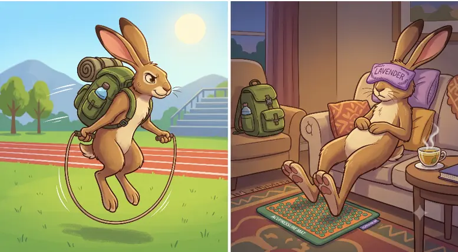

About
This brand is inspired by the black-tailed jackrabbit, an animal that travels at high speed in the desert environment, and stays calm when it is resting. Our mission is to provide people with sustainable options to be energized, like mindfulness and physical activity, instead of unhealthy options like caffienated products.
To achieve this, the methods involve athletic conditioning principles (like speed rope work) and physical therapy recovery protocols (like tactile grounding sand and acupressure tools) to treat mind and body as one.

How Energetic Are You (in a week)?
💙 Recommended: The Restore Kit
Perfect for draining anxiety or physical crashing. Rest comfortably using our posture-correcting cork rollers, standing acupressure foot mats, and soothing lavender eye pillows.